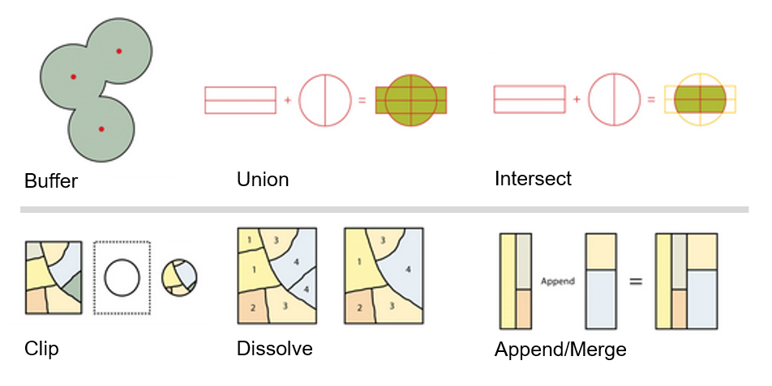
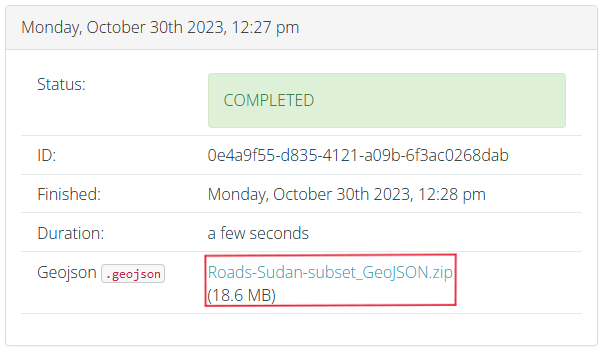
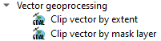
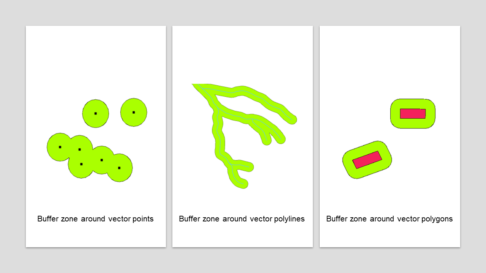
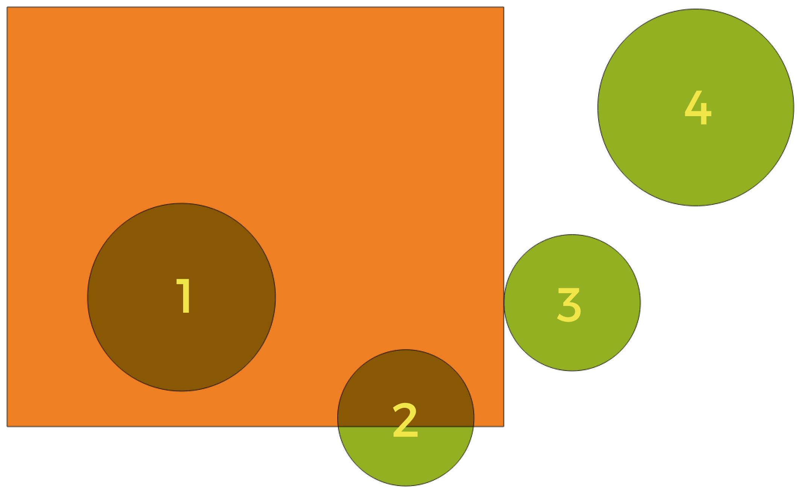
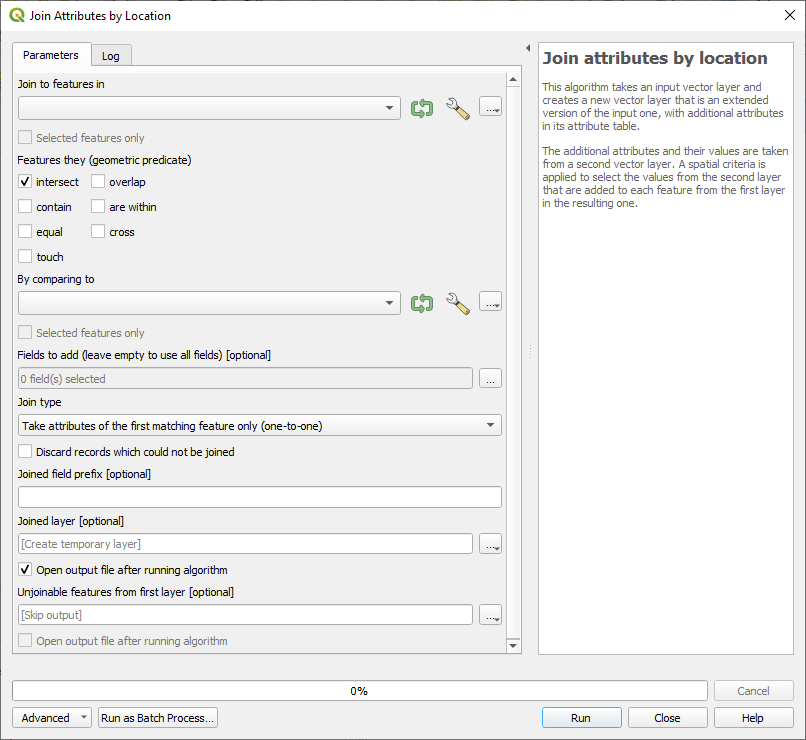
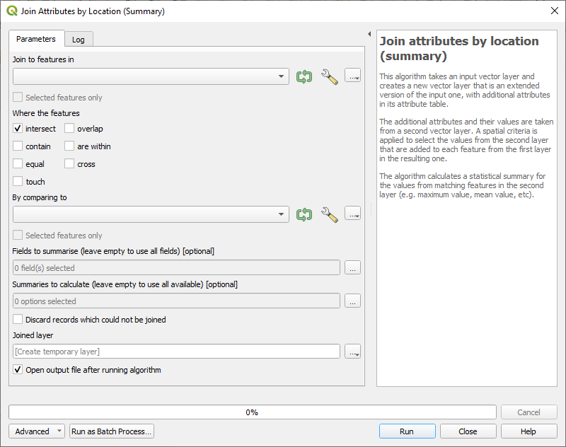
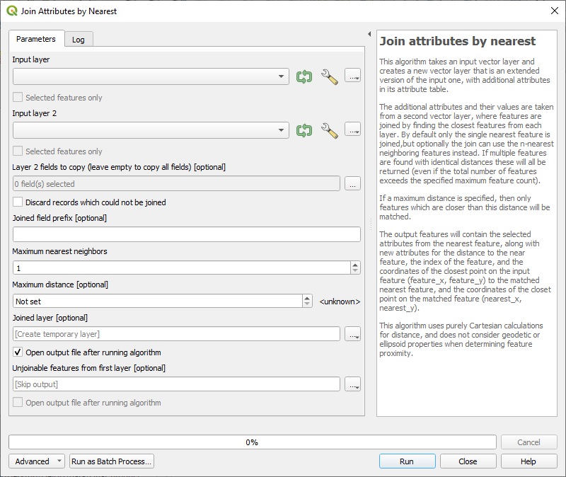
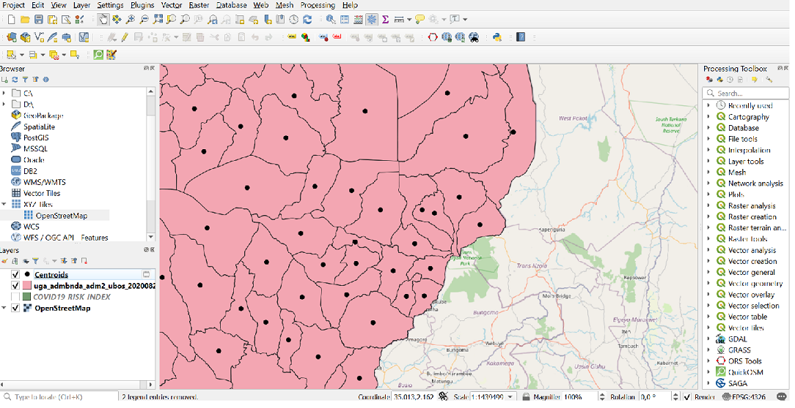

Spatial Geodataprocessing#
Introduction:#
Spatial Geodataprocessing uses spatial information to extract new meaning from GIS data. This data processing is particularly important in humanitarian work and planning aid operations. For instance, the overlay operation Clip can be employed to extract specific areas of interest from multiple layers, allowing us to focus our attention where it is most needed. Similarly, the Dissolve operation allows us to simplify complex datasets, revealing broader trends and patterns that inform our decision-making process. Using Buffer, we can create zones around features to help identify vulnerable areas and plan evacuation routes in the event of a flooding event. Additionally, Spatial Joins can enrich datasets by incorporating additional information from related layers. They can be crucial for understanding the context of a crisis and tailoring our response accordingly. Finally, Spatial Selections enable us to target specific features based on their spatial relationship with other elements, facilitating focused interventions.
{kind=link}

Fig. 129 Different spatial geoprocessing tools. Source: Adapted from Saylor Academy#
In this section, we will explore overlay operations, focusing particularly on the operations of Clip, Dissolve, and Buffer. These operations allow us to combine geometries from two layers in various ways. In addition to these, we will cover Spatial joins and Spatial selections. Spatial joins offer opportunities to enhance the attributes of the input layer by incorporating additional information from the join layer, base on their spatial relationship. These relationships can also be used to select features from an input layer based on their location in relation to another layer. All of these operations make use of the spatial information in the provided input data to either enrich the data or perform various analyses.
Clip#
The 
Clip tool is used to cut a vector layer using the boundaries of another polygon layer. It keeps only the parts of the features in the input layer that are inside the polygons of the overlay layer, producing a refined dataset. While the core attributes of the features remain the same, some properties, like area or length, may change after the clipping operation. If you’ve stored these properties as attributes, you might need to update them manually.
The tool has two different input options:
Input layer: Layer from which the selection is clipped
Overlay layer: Area of interest to which the input layer will be clipped

Fig. 130 Screenshot of the Clip tool with the input data#
Information on road infrastructure for humanitarian aid operations is of great importance and can be easily retrieved from open-source data sources like OpenStreetMap. However, this information is often included in extensive datasets that contain a significant amount of irrelevant details for specific operations or it covers a lot more area than is necessary for the operation. To make working with this data more efficient, it is common practice to clip the data to the area of interest. In addition to clipping, data can often be filtered, as described in the first part of Module 5.
Exercise: Clipping a roads layer to administrative boundaries#
Load the OSM roads data from the HOT Export tool (part of the Humanitarian OpenStreetMap Team) as a new layer: Road_infrastructure_Sudan.geojson.
{kind=link}

Fig. 131 Screenshot of the HOT Export tool used to download your OSM data#
Filter the layer by using the query builder to only show primary and residential roads (“highway” = ‘primary’ OR “highway” = ‘residential’)
Load the admin1 layer for Sudan which contains the district White Nile, ne_10m_admin_1_Sudan_White_Nile.geojson. They are downloaded from Natural Earth Data.
Select the roads layer and open the Clip dialogue from
Vector>Geoprocessing ToolsSet roads as the input layer and the district boundaries of White Nile as the overlay layer
Click Run to generate a temporary layer called Clipped
You now have a tidy roads layer which contains the necessary information
Solution: Clipping a roads layer to administrative boundaries
In addition to the standard QGIS operation Clip, there are two other more advanced tools for performing clipping processes. These tools are GDAL operations, which enable the definition of the clipping extent. This extent can be either a specific area or a mask layer. The second option is quite similar to the standard clipping process provided by QGIS.
{kind=link}

Fig. 132 The GDAL tools Clip vector by extent and Clip vector by mask layer#
This operation clips any vector file to a given extent. This clip extent will be defined by a bounding box that should be used for the vector output file. It also has to be defined in the target CRS coordinates. There are different methods to define the bounding box, which are the great difference between this tool and the standard clipping process:
Calculate from a layer: this uses the extent of a layer loaded into the current project
Calculate from layout map: uses the extent of a layout map item in the active project
Calculate from bookmark: uses the extent of a saved bookmark
Use map canvas extent
Draw on canvas: click and drag a rectangle delimiting the area to take into account
Enter the coordinates as xmin, xmax, ymin, ymax

Fig. 133 Screenshot of the tool Clip vector by extent#
This operation uses a mask polygon layer to clip any vector layer. This operation only takes two input:
The input layer
The mask layer which is used as the clipping extent for the input vector layer

Fig. 134 Screenshot of the tool Clip vector by mask layer#
Buffer#
The concept of  buffering in QGIS for vector data, refers to the process of creating a new polygon layer with areas that represent a certain distance or buffer around existing vector features. This buffer zone is typically uniform and extends outward from the original features, making it useful for various spatial analyses and mapping applications. Examples for such analyses could be: creating of buffer zones to protect the environment, analysing greenbelts around residential areas, or creating risk areas for natural disasters. Buffer can be created around points, lines, and polygons as shown in the figure below.
buffering in QGIS for vector data, refers to the process of creating a new polygon layer with areas that represent a certain distance or buffer around existing vector features. This buffer zone is typically uniform and extends outward from the original features, making it useful for various spatial analyses and mapping applications. Examples for such analyses could be: creating of buffer zones to protect the environment, analysing greenbelts around residential areas, or creating risk areas for natural disasters. Buffer can be created around points, lines, and polygons as shown in the figure below.
{kind=link}

Fig. 135 Different kinds of buffer zones
(Adapted after QGIS Documentation, Version 3.28)#
There are several variations in buffering. The buffer distance or buffer size can vary according to the numerical values provided. The numerical values have to be defined in map units according to the Coordinate Reference System (CRS) used with the data.
Attention
If you are trying to make a buffer on a layer with a Geographical Coordinate System, processing will warn you and suggest to reproject the layer to a metric Coordinate System.
In the case of humanitarian action, buffering can be used to create a map which provides information about the coverage of health sites in the distance of 10 km. The health sites are points and can be buffered with 10 km. In the next step, the results can be dissolved if two buffer zones overlap to create a homogoneous area. These examples will be done in the next steps.
Exercise: Create 10km buffer around health centres#
Download the Sudan health sites data from HDX as a shapefile
Load your new data into QGIS. Also add the district boundaries of Khartoum, ne_10m_admin_1_Sudan_Khartoum.geojson. They are also downloaded and adapted from Natural Earth Data.
Clip your health sites to the boundaries of Karthoum district
Reproject the health sites layer to a local coordinate system to enable setting distances in km
Vector menu > Data Management Tools > Reproject Layer
Select the health sites layer as the input layer
Set the target CRS to WGS 84 / UTM zone 36N (click the projections icon to search the full list of options)
Click
Runto reproject
Open the Buffer tool by accessing
Vector>Geoprocessing Tools>BufferSelect the reprojected layer as the input layer
Set the distance to 10km
Check the option to dissolve result
Leave the other options as defaults and click
Run
Now you have a rough overview over the coverage with health sites for the district of Khartoum
Solution: Create 10km buffer around health centres
Dissolve#
The Dissolve operation was already mentioned in the later part of the previous exercise. The dissolve tool combines features in a vector layer to make new ones. You can pick one or more attributes to group together features that share the same value for those attributes. Alternatively, you can combine all features into one. The tool will convert the shapes into multi-geometries and, if you’re working with polygons, it will remove shared boundaries between them.
If you turn on the “Keep disjoint features separate” option when running the tool, it’ll make sure that features or parts that don’t overlap or touch each other are saved as separate features instead of being part of one big feature. This allows you to create several vector layers.

Fig. 136 Buffer zones with dissolved (left) and with intact boundaries (right) showing overlapping areas
(Source: QGIS Documentation, Version 3.28)#
Spatial joins#
Spatial joins in QGIS enhance the attributes of the input layer by adding additional information from the join layer, relying on their spatial relationship. This process enriches your data by incorporating relevant details from one layer into another based on their geographical associations. In QGIS, a spatial join creates a new layer by comparing the features of one layer to another, depending on their spatial relationship.
Various types of spatial relations exist between the source feature and the target feature, enabling their potential linkage. The subsequent list outlines these distinct options and provides descriptions, all oriented around the lower figure for clarity.
Tests whether the geometry of the two layers intersects with one another. The algorithm returns the value “True” (1), if the geometries intersect spatially. This means that they share any portion of space, overlap, or touch. If they don’t overlap, the algorithms returns the value “False” (0). In the picture below, the algorithm will return the circles 1, 2, and 3.
Disjoint features do not share any portion of space. This means that they don’t touch or overlap. In the picture below, the algorithm would output a layer with only the circle 4.
The algorithms returns a layer with geometries that are exactly the same (all the points and lines are equal). In the picture below, no circles are returned (added to the output layer).
Tests whether a geometry touches another. The algorithm outputs a new layer with the geometries that have at least one point in common, but their interiors do not intersect. In the image below, only circle 3 is returned.
Tests whether geometries overlap. Returns geometries if they share space, are of the same dimension, but are not completely contained by each other. In the image below, only circle 2 is returned.
Tests whether one geometry is within another. Returns geometries a if they are completely inside of geometry b. Only circle 1 is returned.
Returns geometries if and only if no points of b lie in the exterior of a, and at least one point of the interior of b lies in the interior of a. In the picture, no circle is returned, but the rectangle would be if you would look for it the other way around, as it contains circle 1 completely. This is the opposite of “are within”.
Returns geometries that have some, but not all, interior points in common and the actual crossing is of a lower dimension than the highest supplied geometry. For example, a line crossing a polygon will cross as aline (true). Two lines crossing will cross as a point (true). Two polygons cross as a polygon (false). In the picture below, no circles will be returned.
{kind=link}

Fig. 137 Looking for spatial relations between layers
(Source: QGIS Documentation, Version 3.28)#
QGIS provides a range of tools that allow users to delve into spatial relationships and leverage them to enhance their datasets.
This tool takes an input vector layer and creates a new vector layer that is an extended version of the input with additional attributes in its attribute table.
The additional attributes and their values are taken from a second vector layer. For this layer, a spatial criteria is applied to select the values from it that are added to each feature from the first layer.
{kind=link}

Fig. 138 Screenshot of the tool Join attributes by location#
When performing additional calculations in combination with a spatial join, the QGIS tool Join attributes by location (summary) is really helpful. This functionality closely resembles the previously outlined workflow; however, the algorithm extends its capabilities by calculating statistical summaries for the values from matching features in the second layer. These summaries encompass a wide range of options, including minimum and maximum values, mean values, as well as counts, sums, standard deviation, and more.
{kind=link}

Fig. 139 Screenshot of the tool Join attributes by location (summary)#
It takes an input vector layer and uses this information to create a new vector layer. The new layer incorporates additional fields in its attribute table and these supplementary attributes are obtained from a second vector layer. The joining of features occurs by identifying the closest features from each of these layers.
By default, this operation connects each feature with its nearest counterpart. However, it also offers the flexibility to join with the k-nearest neighbouring features if needed.
Furthermore, if a maximum distance is specified, only the features that are within this designated distance will be considered as suitable matches for the joining process.
{kind=link}

Fig. 140 Screenshot of the tool Join attributes by nearest#
In the aftermath of flooding events, data on the affected population and the extent of flooding is crucial. This information can be refined from a nationwide dataset to provide specific numbers for individual districts or states. This can aid in identifying the areas most heavily impacted, leading to more efficient relief operations. In the upcoming exercise, we will calculate the total flooding extent in square kilometres and the affected population for Unity State, South Sudan. To accomplish this, we will utilize the Join attributes by location (summary) tool.
Exercise: Calculate sum of affected population and flooded area for the Area of interest#
Load the necessary data for this exercise into your QGIS. Both datasets were downloaded from HDX:
South Sudan - Subnational Administrative Boundaries:
State_Unity_South_Sudan.shpSatellite detected water extents between 11 and 15 August 2023 over South Sudan: Download the folder FL20220424SSD_SHP.zip, unzip it, and search for the file VIIRS_20230811_20230815_MaximumFloodWaterExtent_SouthSudan.shp
Locate the tool named Join attribute by location (summary)
Choose state boundaries as the target layer for joining features
Set intersect as the spatial relationship
Select flood extent layer as the comparison layer
Specify the fields to be summarized as Area_km2 and Pop
Choose sum as the type of summaries to be calculated
Click Run to start the process
Once completed, you will have access to information on the total affected population and flooded areas for the entire state of Unity.
Solution: Calculate sum of affected population and flooded area for the Area of interest
You can find further information about spatial joins by referring to the QGIS documentation, specifically in the section Join attributes by location.
Select by location#
Next to spatial joins, it is also possible to create a selection in a vector layer. The criteria for the feature selection is based on the previously described spatial relationships between each feature and the features in an additional layer. The feature selection may be visible in the map view or can be seen in the attribute table.
For this process, we select an input layer that defines the features, and these features are subsequently compared to those in a second input layer. The figure below illustrates an example where we examine health sites in a particular region of Senegal and compare them to flooded areas within the same region. This analysis allows us to identify the health sites that are most vulnerable to flooding in that particular area.

Fig. 141 Screenshot of the Select by location tool#
Centroids#
This process creates a new point layer, with points representing the centroids of the geometries of the input layer.
The centroid is a single point that shows the middle of all the parts of a feature. It can be outside the feature or on each part of it. An example would be a point, representing a polygon.
The attributes of the points in the output layer are the same as for the original features.
Centroids can be used in spatial operations such as spatial joins to represent a polygon as points.
{kind=link}

Fig. 142 The black points represent the centroids of the features from the input layer.#